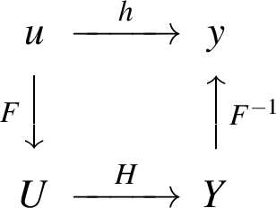

Signal theory: Part 1
Table of Contents
1 Introduction
General information about the course
- Lecturers:
- Ivan Markovsky (part 1, weeks 1, 2, 3, 4)
- Leo Van Biesen (part 2, weeks 4, 5, 6, 7)
- Classes:
- Tuesday, 10:00–12:00, lecture
- Tuesday, 13:00–16:00, exercise session
- Friday, 10:00–12:00, lecture
- MATLAB:
- the exercises involve analytical problems and numerical experiments with MATLAB/Octave
- if you are not familiar with MATLAB, follow the optional course
- Evaluation:
- open-book exam and tests on problems similar to the exercises
Learning outcomes
Specific
- In-depth knowledge of linear systems theory and its application for signal processing.
- Representations of linear time-invariant systems.
- Converting one representation to another.
- Realization theory (Kung's method).
- Least-squares estimation (Kalman filtering).
- System identification (subspace and optimization methods).
- Can formulate a precise mathematical problem from a given engineering specification.
- Can solve signal processing problems by converting them to already solved problems.
- Can solve signal processing problems numerically using Matlab/Octave.
- Can present solution of problems in a clear, well structured way.
General
(Extracted from the learning outcomes of the masters program in electronics and information technology engineering.)
- In-depth knowledge and understanding of exact sciences with the specificity of their application to engineering.
- Can reformulate complex engineering problems in order to solve them (simplifying assumptions, reducing complexity).
- Can present and defend results in a scientifically sound way, using contemporary communication tools, for a national as well as for an international professional or lay audience.
- Can collaborate in a (multidisciplinary) team.
- Has a creative, problem-solving, result-driven and evidence-based attitude, aiming at innovation and applicability in industry and society.
- Has a critical attitude towards one’s own results and those of others.
- Has an active knowledge of the theory and applications of information and communication technology.
- Has a profound knowledge of modelling and control.
Part 1 topics
- Signals and systems (mostly review from a new perspective)
- expansion of a signal in a basis; orthonormal basis
- linear time-invariant systems; behavioral approach
- representations of LTI systems
- convolution
- differential/difference equation
- transfer function
- state-space representation
- the realization problem
- Random signals
- covariance function and spectrum
- Wiener-Khintchine theorem
- stochastic systems
- stochastic realization
- Least-squares estimation
- underdetermined and overdetermined systems of linear equations
- least-norm solution and least-squares approximation
- recursive least-squares approximation
- Kalman filtering
Materials for Part 1
- these notes and lecture slides
- exercises and quizzes
- references
- signals and systems: A. Oppenheim and A. Willsky, Signals and Systems
- linear algebra: G. Strang, Linear Algebra and Its Applications
- system theory: D. Luenberger, Introduction to Dynamical Systems: Theory, Models and Applications
- behavioral approach: (Polderman and Willems)
- realization theory: Sections 2.2 and 3.1 from (Markovsky) and Sections 6.5–8 from (Sontag)
2 Signals and systems
Classification of signals
- examples of "physical" signals
- sound (speech, music, noise, …)
- image (black/white, gray scale — integer 0–255, color)
- video (sequence of images)
- daily exchange rates of one currency into another
- abstract representation as a function
- notation \(f:{\cal X}\to{\cal Y}\) (function from \({\cal X}\) to \({\cal Y}\))
- \({\cal X}\) — domain (where the function argument, say \(x\), takes its values)
- \({\cal Y}\) — image (where the function values belong)
- \(y = f(x)\) — value of the function at the point \(x\in{\cal X}\)
- note that the function \(f\) is not defined for values of \(x\) outside the domain, i.e., for \(x\not\in{\cal X}\)
- notation \(f:{\cal X}\to{\cal Y}\) (function from \({\cal X}\) to \({\cal Y}\))
- scalar (single-channel) vs vector (multi-channel)
- real-valued vs complex-valued
- continuous/analog (the domain is \(\mathbb{R}\)) vs discrete/sampled (the domain is \(\mathbb{Z}\))
- periodic vs non-periodic
- one-dimensional (e.g., sound) vs multi-dimensional (e.g., image and video)
Basic signals and operations with them
- Basic signals
- \(\delta\) Dirak (continuous-time) and Kroneker (discrete-time) delta \[\delta(t) = \begin{cases} 1, & t = 0\\ 0, & \text{otherwise}\end{cases}\]
- \(\exp_{\beta + \mathbf{i}\omega}\) complex exponential function
\[\exp_{\beta + \mathbf{i}\omega}(t) = e^{\beta t + \mathbf{i}\omega t} = e^{\beta t}\big(\cos(\omega t) + \mathbf{i}\sin(\omega t)\big)\]
β --- damping coefficient ω --- frequency Note: complex exponentials are eigen functions of linear time invariant systems: \[S(\exp_{z}) = H(z) \exp_{z}, \qquad \text{where \(S\) is a linear time invariant system}\]
- Signal transformations
- amplitude scaling \(ax\), \(a\in\mathbb{R}\)
- \(|a|>1\) — gain factor (ideal linear amplifier)
- \(|a|<1\) — attenuation factor
- time scaling \(x(at)\), \(a\in\mathbb{R}\)
- shift in time \[x(t + \tau) =: (\sigma^{\tau}x)(t), \quad \tau\in\mathbb{R}\]
- addition \(x + y\) \[(x + y)(t) = x(t) + y(t)\]
- multiplication (modulation) \(xy\) \[(xy)(t) = x(t)y(t)\]
- convolution \(h\star x\) \begin{equation} (h\star x)(t) = \sum_{\tau=-\infty}^{\infty} h(\tau) x(t-\tau) \label{star}\tag{$\star$} \end{equation}
- sampling (discretization in time, analog to digital conversion)
- uniform sampling with sampling time \(t_{\text{s}}\) \[\text{sample}_{t_{\text{s}}}: x_{\text{c}} \mapsto x_{\text{d}}, \quad x_{\text{d}}(t) = x_{\text{c}}(t_{\text{s}}t), \quad t\in\mathbb{Z}\]
- loss of information (aliasing)
- Nyquist–Shannon sampling theorem (for band limited signals, critical frequency)
- reconstruction of the continuous-time signal from the discrete-time samples via sinc interpolation is a convolution of of \(x_{\text{d}}\) with sinc function \[f_{\text{c}}(t) = \left(\sum_{\tau=-\infty}^{\infty} f_{\text{d}}(\tau) \delta(t-\tau t_{\text{s}})\right) \star \text{sinc}(t)\]
- non-uniform sampling (sparsity, compressive sampling)
- interpolation \(x_{\text{d}} \mapsto x_{\text{c}}\)
- digital to analog conversion
- zero order hold
- linear interpolation
- polynomial interpolation
- sinc interpolation (for band limited signals)
- extrapolation: predict the signal in the future
- quantization (discretization in value)
\(\text{quant}_{\Delta}: x_{\text{c}} \mapsto x_{\text{q}}, \ x_{\text{q}}(t) = \left\lceil \frac{x_{\text{c}}(t)}{\Delta} \right\rceil\Delta \)
- \(\Delta\) — quantization level
- loss of information
- "quantization noise"
- amplitude scaling \(ax\), \(a\in\mathbb{R}\)
- Signal expansion in a basis
- spaces and subspaces
- basis of a subspace
- Transform techniques
- representation of the signal in a basis of shifted delta functions
\begin{equation}
x = \sum_{\tau = -\infty}^{\infty} x(\tau) \sigma^{-\tau}\delta = x \star \delta \label{dt}\tag{\(\delta\)-train}
\end{equation}
Note: No computation required!
- discrete Fourier transform
\begin{equation}
x = \frac{1}{T} \sum_{k=0}^{T-1} X(k) \exp_{\mathbf{i} \omega_k}, \qquad \omega_{k} := \frac{2\pi k}{T} \label{dft}\tag{DFT}
\end{equation}
Note 1: Computation is required.
- representation of the signal in a basis of shifted delta functions
\begin{equation}
x = \sum_{\tau = -\infty}^{\infty} x(\tau) \sigma^{-\tau}\delta = x \star \delta \label{dt}\tag{\(\delta\)-train}
\end{equation}
- Measuring the size of a signal (\(x\) with domain \([0,\infty)\))
- total energy: \(\int_{0}^{\infty} x^{2}(\tau)\,d\tau\)
- peak value: \(\max_{t\geq0} |x|(t)\)
- root-mean-square (RMS) value \[\sqrt{\lim_{t\to\infty}\frac{1}{t} \int_{0}^{t} x^{2}(\tau)} \,d\tau\]
Dynamical systems
Examples of "physical" systems
- electrical circuits
- chemical processes
- stock markets
- the solar system
Note: when a "physical" systems is described by a mathematical model (a dynamical system), specify what aspects of the "physical" systems are described (what is the physical meaning of the model variables).
Behavioral approach
- manifest variables \(w\)
- the universal set \(\cal U\)
- behavior: the set of (allowed) signals \(\mathcal{B}\) (the system is a prohibition rule) \[w \in \mathcal{B} \quad\iff\quad \text{\(w\) is a trajectory of $\mathcal{B}$} \]
- example: the solar system, the prohibition rule are Kepler's laws
(gravitational law + Newton's laws \(\quad\leftrightarrow\quad\) Kepler's laws \(\quad\leftarrow\quad\) observations)
A "signal processor" view of a system: map from an input signal to an output signal (an operator)
- notation: \(y = S(u)\)
\(u\) --- input \(y\) --- output \(S\) --- system - block diagram: building complicated systems with interconnections (summation and multiplication, SIMULINK)
- examples
- scaling system: \(y = au\), \(a\) is called the gain
- amplifier if \(|a|>1\)
- attenuator if \(|a|<1\)
- inverter if \(a < 0\)
- differentiator: \(y = u'\)
- integrator: \(y = \int u(\tau)d\tau\)
- time delay: \(y = \sigma^{d} u\)
- convolution system: \(y = h\star u\), \(h\) is a given function
- scaling system: \(y = au\), \(a\) is called the gain
Properties of dynamical systems
- static (memory-less) vs dynamic (with memory)
- linear vs nonlinear
- classical definition of a linear system
- homogeneity: \(S(au) = aS(u)\), for all \(a\)
Interpretation: scaling the signal before or after the system has the same effect.
- superposition: \(S(u_1 + u_2) = S(u_1) + S(u_2)\)
Interpretation: summing the signals before or after the system has the same effect.
Note: the classical definition assumes signals over two-sided infinite intervals (time axis \(\mathbb{Z}\) or \(\mathbb{R}\)) or else one sided infinite (time axis \(\mathbb{Z}_{+}\) or \(\mathbb{R}_{+}\)) and zero initial conditions.
- homogeneity: \(S(au) = aS(u)\), for all \(a\)
- behavioral definition
- homogeneity: if \(w\in\mathcal{B}\) then \(aw\in\mathcal{B}\), for all \(a\)
- superposition: if \(w^{1}\in\mathcal{B}\) and \(w^{2}\in\mathcal{B}\) then \(w^{1} + w^{2} \in \mathcal{B}\)
- classical definition of a linear system
- time-invariant vs time-varying: if \(w\in\mathcal{B}\), then \(\sigma^{\tau}\in\mathcal{B}\), for all \(\tau\)
- autonomous vs open: autonomous systems have no inputs
Response of a linear time-invariant system
- convolution of the input with the impulse response function \[\begin{array}{lll} y &= S(u) \\ &= S\left( \sum_{\tau} u(\tau) \sigma^{-\tau} \delta \right) & \text{(representation of \(u\) in a basis of shifted delta functions)} \\ &= \sum_{\tau} u(\tau) S\big(\sigma^{-\tau} \delta\big) & \text{(by the linearity property of \(S\))}\\ &= \sum_{\tau} u(\tau) \sigma^{-\tau} S\big(\delta\big) & \text{(by the time-invariance property of \(S\))}\\ &= \sum_{\tau} u(\tau) \sigma^{-\tau} h & \text{(\(h\) is the impulse response of \(S\))}\\ &= h \star u & \text{(by the definition of the convolution operator)} \end{array}\]
- multiplication of the Fourier transform of the input with the frequency response function \[\begin{array}{lll} y &= S(u) \\ &= S\left( \sum_{k} U(k) \exp_{\mathbf{i}\omega_k} \right) & \text{(representation of \(u\) in a basis of complex exponentials)} \\ &= \sum_{k} U(k) S( \exp_{\mathbf{i}\omega_k} ) & \text{(by the linearity property of \(S\))}\\ &= \sum_{k} U(k) H(k) \exp_{\mathbf{i}\omega_k} & \text{(by the fact that \(\exp_{\mathbf{i}\omega_k}\) are eigen functions of LTI systems)}\\ &= F^{-1}\big( U(k) H(k) \big) & \text{(\(F^{-1}\) is the inverse Fourier transform)} \end{array}\]
Exercises HW
Optional reading assignments
- section 1.1 (classification of signals), 1.2 (classification of systems), and chapter 2 (representation of signals and systems) from A. Oppenheim and A. Willsky, Signals and Systems
Problems
- System classification
- Give specific examples of:
- linear static system
- nonlinear static system
- linear time-invariant dynamical systems
- finite impulse response (FIR)
- infinite impulse response (IIR)
- scalar
- multivariable
- linear time-varying dynamical systems
- nonlinear time-invariant dynamical systems
- nonlinear time-varying dynamical systems
- Give specific examples of:
- Response of an LTI system
- Find analytically the response of 1st and 2nd order autonomous linear time-invariant systems.
- Write a function that computes the response.
- Test the function on a numerical example and compare the result with the one obtained via the function
lsimfrom Control Toolbox of Matlab. - Generalize 1–3 for a general \(n\)th order linear time-invariant autonomous systems.
3 Representations of LTI systems
Representation of static systems
- function vs relation
- image representation
- kernel representation
- input/output representation
Representation of linear time-invariant systems
- difference/differential equations
\[\sum_{\tau = 1}^{n} a_{\tau} y(t-\tau) = \sum_{\tau=1}^{m} b_{\tau}u(t-\tau)\]
special case
\[y(t) = \sum_{\tau=1}^{m} b_{\tau}u(t-\tau)\]
- the differentiation (continuous-time systems) / shift (discrete-time systems) operator \(\sigma\)
- initial conditions (free response)
- systems with inputs
- linear constant coefficient ordinary differential equation
- example mass-spring-damper
- transfer function (forced response)
- rational \(=\) finite order
- state space
- nonuniqueness
- realization problem
- matrix exponential
- convolution
- properties
- \(x\star h = h\star x\)
- \((x\star h_{1}) \star h_{2} = x \star (h_{1} \star h_{2})\)
- \(x\star (h_{1} + h_{2}) = x \star h_{1} + x \star h_{2}\)
- the deconvolution problem
- properties
- convolution systems
- impulse response and step response
- convolution theorem: \(y = h\star u \leftrightarrow Y = HU \qquad\)

- infinite impulse response (IIR) systems
- finite impulse response (FIR) systems
- DC gain \[H(0) = \int_{0}^{\infty} h(\tau)d\tau = \lim_{\tau\to\infty} s(\tau) \qquad\text{(continuous-time)}\] \[H(1) = \sum_{\tau = 0}^{\infty} h(\tau) d\tau \qquad\text{(discrete-time)}\]
Autonomous systems
- Section 3.2 in (Polderman and Willems)
Links among representations
Realization theory
- Sections 2.2 and 3.1 from (Markovsky)
- Sections 6.5–8 from (Sontag)
Exercises HW
Additional reading
Chapters 1 (behavioral models) and 4 (state-space representation) from (Polderman and Willems)
Problems
- Matrix representation of the discrete Fourier transform
- Find a matrix representation \(F\) of the discrete Fourier transform \[\hat x(k) = \sum_{t = 0}^{T-1} x(t) e^{-\mathbf{i} 2\pi tk / T}, \qquad\text{for } k = 0,1,\ldots,T-1\] of signal \(x = \big( x(0), \ldots, x(T-1) \big)\).
- What is the number of multiplications needed to compute \(\hat x = Fx\) by matrix-vector multiplication? Compare this number with the \(T\log_{2}(T)\) multiplications needed for the same computation by the fast Fourier transform.
- Using \matlab's
ticandtocfunctions measure the computation times of the matrix-vector multiplication and the fast Fourier transform methods for the computation of the discrete Fourier transform of \(x\). (Use a random \(x\).) Repeat the experiment for different size \(n\) of \(x\) and plot the results. - Do the empirical observations match the theoretical predictions? Justify your answer by fitting the observed computation times to the analytical expressions.
- Matrix representation of the convolution operation
- Find a matrix representation \(M_{h}\) of the convolution operator \[(h\star x)(t) := \sum_{\tau = 1}^{n} h(\tau) x(t - \tau), \qquad\text{for } t = 1,\ldots,T\] of the signals \[h = \big( h(1), \ldots, h(n) \big) \quad\text{and}\quad x = \big( x(-n+1), \ldots, x(0), x(1), \ldots, x(T) \big).\]
- What is the number of multiplications needed to compute \(y = M_{h}x\) by matrix-vector multiplication?
- Propose a method for convolution based on the fast Fourier transform. What is the computational cost of this method?
- Can you propose another fast method for convolution in the case when \(h\) is a sum of exponentials?
4 Stochastic models
Convolution of probabilities
- consider discrete random variables \(X\)
- let \(p_i = \text{prob}(X = i)\) be the probability of the event that \(X=i\)
- we have that \(0\leq p_i\leq 1\) and \(\sum p_i = 1\)
- \(p\) is called the probability density function (pdf) of \(X\)
- consider independent identically distributed (i.i.d.) random variables \(X_1\) and \(X_2\) with pdf's \(p^{(1)}\) and \(p^{(2)}\)
- problem: find the pdf of \(X_1 + X_2\), i.e., find the probabilities \(\text{prob}(X_1 + X_2 = k)\)
- example: dice trowing \(p^{(j)}_{i} = 1/6\), for \(j=1,2\) and \(i = 1,\ldots,6\)
- we have \(\text{prob}(X_1 = i \text{ and } X_2 = j) = p^{(1)}_ip^{(2)}_j\)
- \(X_1 + X_2 = k\) is a union of mutually exclusive events: \(X_1 = i\) and \(X_2 = k - i\), which probability is \(p^{(1)}_ip^{(2)}_{k-i}\)
- therefore \[\text{prob}(X_1 + X_2 = k) = \sum p^{(1)}_ip^{(2)}_{k-i} = (p^{(1)} \star p^{(2)})(k)\]
- back to the dice example: \[\frac{1}{6} (1,1,1,1,1,1) \star \frac{1}{6} (1,1,1,1,1,1) = \frac{1}{36} (1,2,3,4,5,6,5,4,3,2,1)\]
- note: a box convolved with a box results to a hat
- convolution of the box \(N\geq 2\) times with itself
n = 7; T = 20; N = 5; box = zeros(1, T); box((round(T/2) - n):(round(T/2) + n)) = 1; p = box; figure(1), stem(p), pause(1), print_fig('conv0') for i = 1:N, p = conv(p, box); stem(p), pause(1), print_fig(['conv' int2str(i)]), end
- central limit theorem: sum of independently distributed random variables converges to a normally distributed random variable
- another solution using the generating function \[p(z) = p_1z + p_2z^2 + \cdots + p_nz^n\]
- the generating function of \(X_1 + X_2\) is \(p^{(1)}p^{(2)}\)
- product of polynomials is a convolution of their coefficients
Gaussian distribution (second order process)
- notation: \(x\sim\mathbf{N}(\mu,\sigma^2)\) \[p(x) = \frac{1}{\sqrt{2\pi}\sigma} \exp\left( -\frac{1}{2} \left(\frac{x - \mu_{x}}{\sigma_{x}}\right)^{2}\right)\]
- Gaussian random vector \(x\sim\mathbf{N}(\mu,V)\)
\[p(x) = \frac{1}{(2\pi)^{n/2}\sqrt{\det(V)}} \exp\left( -\frac{1}{2} (x-\mu)^{\top}V^{-1}(x-\mu)\right)\]
- diagonal \(V\) — uncorrelated RV
- affine transformation of a Gaussian random vector \(y = Ax + b\), \(y\sim\mathbf{N}(A\mu+b,AVA^{\top})\)
- of particular interest is a transformation \(A\) that de-correlates (whitens) \(x\) \[AVA^{\top} = D \qquad\text{\(D\) --- diagonal}\]
- Cholesky decomposition of a positive definite matrix \(V = LDL^{\top}\), \(L\) — lower triangular with ones on the diagonal, then \(A = L^{-1}\)
Random processes
- a discrete-time random process (signal) \(y\) is a sequence of random variables
- example white Gaussian process
- Markov chains
- the mean of \(y\) is the sequence of the means
- covariance matrix (assuming zero mean process)
\[R_{y} = \big[ \underbrace{\mathbf{E}\big( y(i) y(j)}_{r_{y}(i,j)} \big]_{i,j=1}^{m} = \mathbf{E} \begin{bmatrix} y(1)\\ y(0)\\\vdots\\ y(-m)\end{bmatrix} \begin{bmatrix} y(1) & y(0) & \cdots & y(-m)\end{bmatrix} \]
- property: positive semi-definite matrix
- intuition: rate of variation of the signal (show diagrams)
- stationary process (signal):
- strict sense stationary
- wide sense stationary: \(\mathbf{E}(y)\) is a constant and \(r_{y}(i,j)\)'s depends only on \(\tau = i - j\)
- then \(R_{y}\) is a Toeplitz structured matrix
\[r_{y}(\tau) = E\big(y(t)y(t-\tau)\big)\]
- properties of correlation function
- \(r_{y}(\tau) = r_{y}(-\tau)\)
- \(r_{y}(0) \geq \left| r_{y}(\tau) \right|\), for all \(\tau\)
- link to convolution: \(r_{y} = y \star \text{rev}(y)\), where "rev" is the time reversal \[\big(\text{rev}(y)\big)(t) = y(-t)\]
- power spectral density
- note that with probability one a realization of a random process has no finite energy and therefore no Fourier transform
- random processes however usually have finite average power and can be characterized by the average power spectral density
- Fourier transform of the covariance function \[\phi_y(\omega) = \sum_{k=-\infty}^{\infty} r_{y}(k) e^{-\mathbf{i}\omega k}\]
- properties
- \(\phi_y(\omega)\geq0\), for all \(\omega\)
- if \(y\) is real, \(\phi_y(\omega)=\phi_y(-\omega)\)
- Parseval's theorem: energy preservation in time and frequency domain \[\sum_{t=-\infty}^{\infty} = \frac{1}{2\pi} \int_{-\pi}^{\pi} \phi_y(\omega)d\omega\]
- ergodic process: expectation can be computed by time averaging \[r_y(\tau) = \lim_{T\to\infty} \frac{1}{T} \sum_{t = 1}^{T} y(t)y(t-\tau)\]
- transformation of the power spectral density by an LTI system
\[\phi_{y}(\omega) = |H(\omega)|^{2} \phi_{u}(\omega)\]
- show first that \[r_{y}(\tau) = \int\int h(\alpha)h(\beta) r_{u}(\tau+\alpha-\beta)d\alpha d\beta\]
- using \(\phi_{y}(\omega) = \int r_{y}(\tau) e^{-\mathbf{i}\omega\tau}d\tau\) and the change of variables \(\lambda = \tau + \alpha - \beta\), we have \[\begin{split} \phi_{y}(\omega) &= \int\int\int h(\alpha)h(\beta)r_{u}(\tau+\alpha-\beta)e^{-\mathbf{i}\omega\tau}d\alpha d\beta d\tau\\ &= \int\int\int h(\alpha) h(\beta)r_{u}(\tau+\alpha-\beta)e^{-\mathbf{i}\omega(\lambda - \alpha + \beta)}d\alpha d\beta d\lambda\\ &= \int h(\alpha) e^{-\mathbf{i}\omega\alpha} d\alpha \int h(\beta) e^{-\mathbf{i}\omega\beta} d\beta \int r_{u}(\lambda)e^{-\mathbf{i}\omega\lambda} d\lambda\\ &= H(-\omega)H(\omega) \phi_{u}(\omega)\\ &= |H(\omega)|^{2} \phi_{u}(\omega) \end{split}\]
- another formula \(\phi_{uy}(\omega) = H(\omega) \phi_{u}(\omega)\)
- white Gaussian noise
- power spectrum \(\phi_{u}(\omega) = 1\), for all \(\omega\)
- shaping filter
- spectral factorization problem
- parametrized random processes
- moving average (MA)
- auto regressive (AR)
- auto regressive moving average (ARMA)
- auto regressive moving average exogenous (ARMAX)
- realization of stochastic systems
Wiener-Khintchine theorem
- consider a random process \(y\)
- Fourier transform of the autocorrelation function \(r\) is the power spectral density \(\phi_y\)
- definition: \(\phi_{y} := F(y)F^{*}(y) = |F(y)|^{2}\)
- theorem: \(\phi_{y} = F(r_{y})\)
- the proof is based on the following properties:
- \(F(y\star y) = F(y)F(y)\)
- \(F\big(\text{rev}(y)\big) = F^{*}(y)\)
- \(y\star \text{rev}(y) = r_{y}\)
\[\phi_{y} = F(y)F^{*}(y) = F(y) F\big(\text{rev}(y)\big) = F\big(y\star \text{rev}(y)\big) = F(r_{y})\]
- note: direct computation requires \(O(n^2)\) flops, FFT computation requires \(O(n\log(n))\)
Estimation principles
- conditional expectation
- consider two RV \(x\) and \(y\) with joint pdf \(p_{x,y}\)
- we want to infer \(x\) from observations of \(y\)
- estimator: \(\hat x = h(y)\)
- if \(x\) and \(y\) are independent, nothing can be said about \(x\), seeing \(y\)
- optimal estimator: \(\hat x = \mathbf{E}(x | y)\) — conditional expectation of \(x\), given \(y\)
- important special case: linear estimators and Gaussian pdf
- maximum likelihood: parameter dependent pdf \(p(x,\theta)\)
- substitute the observed data in \(p(x,\theta)\) and view the resulting function \(L(\theta)\) in \(\theta\) as the "likelihood" for the occurrence of the data, given the parameters \(\theta\)
- maximize the likelihood for all admissible parameter values \(\theta\in\Theta\)
- minimization of the MSE: \(\mathbf{E}\big((\theta - \hat\theta)^{2}\big)\)
Spectral estimation
- basic problem: determine the spectral content of a signal (random process) based on finite set of observations
- PSD function describes the distribution of power of the signal with frequency
- "physical way of doing it": 1) filter with a sufficiently narrow band-pass filter centered at \(f=f_0\) and measure the power of the output. 2) divide the power by the filter width, 3) repeat the process for different \(f_{0}\)
- traditionally based on the Fourier transform
- since 1980 new "modern"/"high resolution" approaches were developed
- in the last 10 years compressive sensing is taking over
- The task of estimating the spectral density based on finite data is impossible. At best we can estimate a subset of the most significant values, which are assumed to be the \(M\) leading coefficients. If the process exhibits strong correlations for lags \(k > M\), the results are heavily biased.
- The "impossibility problem" can be resolved by postulating specific forms of the spectral density, e.g., rational form. The process is parameterized by a finite (and small) number of coefficients. The spectral estimation problem becomes the one of parameter estimation. It is important however that the model is an accurate representation of the true spectral density.
- nonparameteric methods
- periodogram \[\hat \phi(\omega) = \frac{1}{N} \left| \sum_{t=1}^{T} y(t) e^{-\mathbf{i}\omega t}\right|^{2}\] Square the absolute value of the DFT on the process.
- correlogram \[\hat \phi(\omega) = \sum_{k=-(N-1)}^{N-1} \hat r_{y}(k) e^{-\mathbf{i}\omega k} \] Apply the DFT on the estimated autocorrelation sequence \[\hat r_{y}(k) = \frac{1}{T} \sum_{t=k+1}^{N} y(t)y(t-k), \qquad\text{for } 0\leq k\leq T-1\] For negative lags \(\hat r_{y}(-k) = \hat r_{y}(k)\), \(k = 0,\ldots,T-1\).
- maximum likelihood